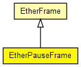

Ethernet frame used by the PAUSE protocol
The following diagram shows usage relationships between types. Unresolved types are missing from the diagram. Click here to see the full picture.
The following diagram shows inheritance relationships for this type. Unresolved types are missing from the diagram. Click here to see the full picture.
| EtherFrame (packet) |
Common base class for classes representing Ethernet II and 802.3 frame types, containing their common header fields. |
| Name | Type | Description |
|---|---|---|
| pauseTime | int |
in 512 bit-time units |
| dest | MACAddress | |
| src | MACAddress |
MessageId id; -- uncomment for tracing frames |
// // Ethernet frame used by the PAUSE protocol // packet EtherPauseFrame extends EtherFrame { int pauseTime; // in 512 bit-time units }